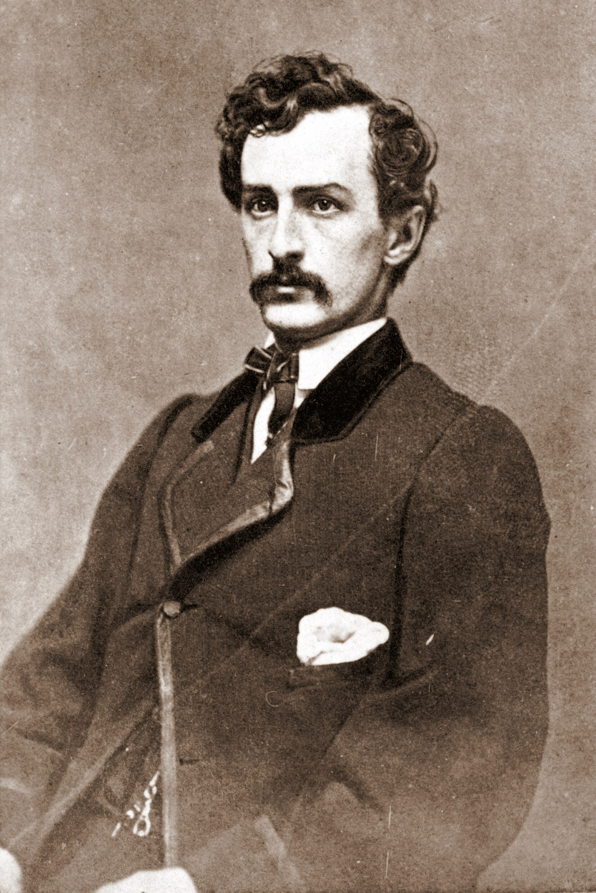

Chapter 1
The City of Oil Lamps
The gas lamps along Tenth Street were lit by half past six, their pale cones wavering in a spring wind that carried the smell of coal smoke and horse manure across Washington City. Ford’s Theater stood at the corner of Tenth and F, its three-story brick facade freshly painted in cream and brown, the marble columns flanking the entrance catching the light like theatrical flats. Above the doorway, a painted banner announced tonight’s benefit performance of Our American Cousin, with the proceeds to go to the manager’s friend Clara Morris. The street itself was mud, churned by the day’s traffic of army wagons and civilian carriages, and now, in the cooling evening, it had begun to stiffen into ruts that would catch a horse’s hoof or a lady’s heel.
The city was dressed for victory. Five days had passed since General Lee’s surrender at Appomattox Court House, and the capital still wore its celebration: bunting hung from windows, flags drooped from staffs, the Stars and Stripes repeated everywhere in a fever of reunion. The War Department had ordered a hundred-gun salute on the Tuesday; the guns had fired from the Arsenal at noon, and the sound had rolled across the Potomac and back again, answered by private cannonades and impromptu parades.
Yet the victory was exhausted before it was won. The streets were crowded with men in faded blue uniforms—discharged soldiers waiting for pay, convalescents from the hospitals, bounty jumpers who had taken the enlistment money and run, now drifting back to claim amnesty. The theaters were full because the camps were emptying, because the work of war was finished and no one yet knew what work came next.
Washington City in April 1865 occupied a peculiar geography, at once a capital and a frontier. The District of Columbia sat on the Maryland side of the Potomac, its western edge defined by the river and its southern by the Anacostia, with the Navy Yard extending into the water like a thumb. The city proper ended somewhere around Fourteenth Street; beyond that lay the rural precincts of Washington County, orchards and market gardens giving way to open country.
To the south and east, across the Eastern Branch, the land ran flat toward Maryland, a landscape of tobacco farms and pine barrens that had served throughout the war as a corridor for Confederate agents and contraband traders. The Navy Yard Bridge, a wooden toll structure at the foot of Eleventh Street, offered the most direct crossing into Prince George’s County. A man on horseback could reach Maryland soil in twenty minutes, could lose himself in the darkness beyond the river before any alarm caught him.
The security of this perimeter was theoretical. The capital was ringed by military installations—Forts Totten, Stevens, Reno, Good Hope—but their guns faced outward, toward an enemy army that had ceased to exist. Inside the city, the provost marshal’s office maintained registers of suspected Confederate sympathizers, but the lists were outdated, the surveillance sporadic. The Confederate secret service had operated in Washington throughout the war, running agents through southern Maryland, using safe houses in the city, communicating by cipher and courier. Some of this network remained intact in April 1865, though its purpose had grown uncertain. The war was over. The cause was lost. The men who had once risked execution to carry messages across the lines now faced a different calculation: whether to claim the protection of surrender, or to disappear into the general population, or to attempt one final operation that might redeem the defeat.
John Wilkes Booth moved through this city as a familiar figure. At twenty-six, he was among the most celebrated actors in America, his performances as Richard III and Hamlet drawing crowds in Boston, New York, Philadelphia, and Washington. He knew Ford’s Theater intimately; he had played there often, had his mail sent there, enjoyed the privileges of a professional favorite. Earlier that day, Good Friday, he had stopped at the theater around noon to collect his correspondence. While there, he learned from John Ford’s brother Harry that President Lincoln and General Grant were expected to attend that night’s performance of Our American Cousin. Booth made no appointment, gave no sign of his intentions. He was, to all appearances, a young man with time on his hands and the casual habits of theatrical life.

The morning had begun at midnight. Booth wrote to his mother that all was well but that he was in haste. In a pocket diary he carried, he recorded a different sentiment: that with the cause almost lost, something decisive and great must be done.
These two statements, one domestic and reassuring, the other political and desperate, suggest the double life he had constructed. For months he had pursued a scheme to kidnap the president, to seize Lincoln during a theater performance and carry him south to Richmond, where he might be ransomed for Confederate prisoners of war. This plan had absorbed Booth’s energies and money, had drawn into its orbit a shifting group of conspirators—John Surratt, George Atzerodt, David Herold, Lewis Powell, Samuel Arnold, Michael O’Laughlen.
The capture of Richmond and Lee’s surrender had rendered kidnapping obsolete. Booth adapted. He would not abandon his project; he would transform it. The object became assassination, and the target expanded: Lincoln, Vice President Andrew Johnson, Secretary of State William Seward, General Ulysses S. Grant.
The simultaneous murder of these men would, Booth calculated, decapitate the Union government and throw it into panic and confusion.
The calculation was theatrical in its conception. Booth thought in dramatic structures, in climactic scenes and spectacular effects. The death of a single man might be forgotten; the coordinated destruction of a government would enter history. Yet the practical arrangements remained incomplete. Atzerodt, assigned to kill Johnson, had lost his nerve and would spend the evening drinking in a hotel bar. Grant, invited to join the presidential party, had declined and left the city that afternoon. Powell would attack Seward in his sickbed, but Powell was unstable, his instructions confused. Only Booth would complete his assigned action. The conspiracy that had seemed comprehensive in planning had narrowed, by the evening of April 14, to one man with a pistol and a knife, and a theater full of witnesses who knew his face.
The city around him offered conditions that made such an attempt conceivable. Washington’s population had swollen during the war to more than 200, 000, a chaotic mixture of permanent residents, temporary officials, military personnel, refugees, and speculators. The street grid was incomplete; many roads remained unpaved; lighting was erratic beyond the central commercial district. The police force, reorganized during the war, numbered fewer than two hundred men for a jurisdiction that included the entire District. The military presence was more substantial—brigades of infantry encamped in the public grounds, cavalry patrols on the principal avenues—but their attention was directed toward public order, not personal protection. The president’s movements were announced in the newspapers, his attendance at theaters treated as public occasions. Lincoln himself resisted security measures that would restrict his contact with citizens. He had survived four years of war without serious injury; he expected to survive the peace.
The atmosphere of April 14 was particularly volatile. The surrender at Appomattox had produced not only celebration but anxiety. What terms would govern reunion? What would become of the Confederate leadership? What of the emancipated slaves, now numbering in the hundreds of thousands within Union lines? The city was full of men who had committed themselves to the Confederate cause—Maryland civilians who had sheltered agents, discharged Confederate soldiers who had crossed the lines to claim parole, merchants whose commercial interests lay in southern markets. Loyalty was already fading; men who would have hidden a fugitive in 1864 were calculating their exposure in 1865. But the transition was incomplete. The networks of sympathy and supply remained operational, if attenuated. A man with the right passwords, the right associations, could still find assistance in southern Maryland.
Booth spent the afternoon in preparation. He retrieved weapons from a rented room—a. 44 caliber Derringer pistol, a Rio Grande camp knife—and arranged for horses to be held at a stable behind Ford’s Theater. He met with David Herold, the young pharmacist’s assistant who had joined the kidnapping conspiracy and would now serve as guide and accomplice in the flight through Maryland. Herold knew the country south of the city, had hunted there, could navigate the roads that ran through Dr. Samuel Mudd’s neighborhood toward the Potomac crossing. The plan was to shoot Lincoln in his theater box, to leap to the stage (a drop of some twelve feet), to escape through the rear door to the waiting horses, and to ride hard for the Navy Yard Bridge before any effective pursuit could be organized.
The timing was constrained by the theater schedule. Our American Cousin was a comedy of American manners, its humor depending on the contrast between an English nobleman and his rustic American relatives. The play was structured in three acts, with a strong scene toward the end of the second act that Booth had identified as his moment. The line that would draw laughter, covering the sound of a pistol shot, came when the lead actress delivered a bit of rustic American slang that would be largely incomprehensible to modern ears. The management had installed a flag-draped box for the presidential party: box seven, on the right side of the stage, accessed by a narrow corridor and a single door. Booth knew the building’s layout better than most of its employees. He had measured the distances, tested the doors.
The evening advanced. The crowd gathered at Ford’s Theater included the usual mixture of Washington society and transient visitors: officers in dress uniform, government clerks with their wives, tourists who had come to see the president in person. The temperature was mild for April, and the gas lighting inside the theater produced a stuffiness that would grow oppressive as the performance continued. Outside, the street filled with carriages depositing their passengers, with boys selling programs, with the casual traffic of a city at leisure. The president’s arrival was delayed; he and Mrs. Lincoln had dined with guests at the White House and reached the theater shortly after eight-thirty. Their entrance interrupted the first act, drawing applause that stopped the performance. The orchestra struck up “Hail to the Chief.” Lincoln took his seat in the box, visible to the audience below as a familiar silhouette against the flag-draped background.
The play resumed. The audience settled into its accustomed responses, laughter rising and falling on cue. Booth moved through this scene as both participant and observer. He had taken a position outside the theater, watching for the presidential arrival, then entered through the front door and made his way to the bar beneath the stage. He drank a whiskey, perhaps two, maintaining the appearance of a man passing time before the evening’s entertainment. At some point he moved to the rear of the building, ascended a staircase, and entered the narrow corridor that led to the presidential box. The door was unguarded. A single servant, Charles Forbes, had been posted outside but had moved to a better position to watch the play. Booth carried a piece of wood he had left there earlier, used it to jam the door behind him, and stepped into the box.
What followed occupied seconds. The Derringer fired a single ball into the back of Lincoln’s head. Major Henry Rathbone, seated with the presidential party, rose to grapple with the assassin. Booth struck at him with the knife, inflicting a serious wound, then vaulted the railing of the box. His spur caught in a flag draped over the front; he landed awkwardly, perhaps breaking a bone in his left leg. He rose, faced the audience with a gesture that some witnesses described as a shout—“Sic semper tyrannis,” the motto of Virginia, or simply “The South is avenged”—and crossed the stage to the rear exit. The actor’s training showed in this movement: even injured, Booth maintained the projection of voice and gesture that would carry to the back of a theater.
The audience reacted with confusion rather than immediate alarm. The pistol shot had been muffled by laughter; the figure on stage seemed part of the performance until his passage through the scenery revealed otherwise. The presidential box was hidden from most of the house; only those nearby could see Mrs. Lincoln’s gestures of distress, could hear her cry that the president had been shot. The house lights came up slowly. Men began to move toward the stage, toward the exits, toward the box. The confusion would last for minutes, for crucial minutes, while Booth made his escape.
He emerged from the rear door onto Baptist Alley, where a stagehand held his horse. The animal was skittish; Booth had trouble mounting, and his injured leg complicated the operation. He struck at the man who tried to assist him, perhaps fearing delay, perhaps simply desperate to be gone. Then he was riding north on F Street, away from the theater, toward the Capitol and the Navy Yard beyond. Herold was waiting at the designated rendezvous; they would cross into Maryland as a pair, the guide and the wounded assassin, beginning a journey whose outcome neither could predict.
The city they left behind was still unaware of its transformation. The news would travel by word of mouth, by messenger, by the telegraph wires that connected Washington to the nation. The War Department would receive first notice; Secretary Edwin Stanton would begin the process of mobilization that would occupy the next twelve days. But in the immediate aftermath, Ford’s Theater was simply a building full of frightened people, Tenth Street a corridor of spreading rumor. The gas lamps continued to burn, the mud remained in the ruts, the bunting hung from windows that would soon be draped in black. The theater of exhausted victory had become, without preparation or transition, the scene of an unprecedented crime.
The geography that had enabled celebration now enabled escape. The Navy Yard Bridge lay less than two miles from Ford’s Theater, a straight ride down Eleventh Street through largely open ground. The sentry posted at the bridge, a Union soldier named Silas Cobb, had instructions to stop persons crossing after dark, but the enforcement was relaxed in the general demobilization. Booth reached the bridge within half an hour of the shooting; he told Cobb that he was going home to Charles, a nearby town, and was allowed to pass.
Herold followed, using the same explanation. The two were in Maryland before any organized pursuit could be directed. The river marked a jurisdictional as well as a physical boundary; the military authorities in Washington could not operate freely in Prince George’s County without invoking martial law or requesting state cooperation. The porous border that had admitted Confederate agents throughout the war now admitted their assassin.
The conditions that made this escape possible were not accidental. Washington City had grown too fast for its institutions; the war had accelerated every trend toward congestion and improvisation. The capital’s security apparatus was designed for open warfare, not for clandestine threats; its police were overwhelmed by the ordinary crimes of a boom town; its military garrison was absorbed in the process of demobilization. The Confederate networks that Booth exploited were residual, their participants already calculating their postwar futures, but they had not yet dissolved. A man with urgent need and sufficient knowledge could still find shelter in southern Maryland, could still cross the Potomac into Virginia, could still hope to reach territory where Union authority was contested or absent.
Booth had constructed his plan around these conditions, though he had not fully understood their limits. He expected active assistance from Confederate sympathizers who proved reluctant or unavailable. He counted on speed and surprise to compensate for his injury, not anticipating how much the broken leg would slow his movement. He imagined a general uprising that would follow the assassination, a political effect that never materialized. The gap between his theatrical conception and his practical situation would widen with each day of flight, each failed rendezvous, each encounter with civilians who saw the reward notices and calculated their interests.
Yet the initial success was real. The assassin had struck at the heart of the republic and escaped into the night. The city of oil lamps, with its muddy streets and its uneasy celebrations, its military camps and its civilian chaos, had provided the stage for this drama and would now provide the terrain for its pursuit. The institutions that should have prevented the crime—the presidential guard, the theater security, the bridge sentries—had failed at critical moments. The institutions that would attempt to answer it—the War Department, the detective force, the cavalry columns—would struggle against the same geographical and social conditions that had enabled the escape.
The night of April 14, 1865, was warm and clear. In the rural districts beyond the Navy Yard Bridge, men heard horses pass and thought nothing of it; travelers were common even at unusual hours, and the roads were free of military patrol. In Washington, the process of alarm and response was only beginning. Messengers carried news to the White House, to the War Department, to the homes of cabinet officers. Doctors arrived at Ford’s Theater to attend the wounded president; others were summoned to the Seward residence, where Lewis Powell had attacked the secretary of state and his household in a frenzy of violence that left five people injured but none dead. The vice president, Andrew Johnson, slept unaware at the Kirkwood House; George Atzerodt had drunk himself into incapacity rather than attempt his assigned murder.
The city, a porous and chaotic stage, is now waiting for the first alarm; the pressure of an unknown crime is about to break its deceptive calm.